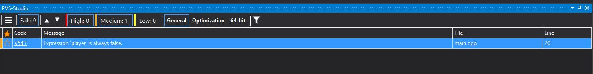

Introduction
Imagine a world in which every programmer out there knows how to write code without any errors, perfectly working on the first time and super easy and clear to read for other programmer colleagues. That is a dream world, in which every programmer of us would like to go. Writing clear code is a hard task itself, even the most professional programmers out there can do mistakes and it's a normal and common thing.
Well then, chances are that you used drive documents or word itself to write some essay, either in high school, university or whatever. I am sure you are an expert in writing on your own language, or at least that is what I hope. Word or drive gives you a tool to detect possible grammar mistakes, such as a missing letter, a misspelled word, etc... And chances are that even if you're very good at your language, you still use that tool, because why not, right? It gives you confidence and helps you detect errors that maybe you missed. ¿Wouldn't that be amazing for programming purposes? ¿And why do I tell you all of this? Well, this was a brief introduction to understand what Code Analysis is! It's a tool made with the purpose of detecting possible errors at the time you code.
¿What is static code Analysis?
Static code analysis is similar to the example stated above, but a bit different, if you misspell a variable, if you declare two variables with the same name, the compiler is just going to fail and it's going to tell you, that's the purpose, it only tries to make sense of what you code. But a compiler wont understand what your code intention was, the purpose of the code you've written, it just tries to compile what you've written, it will not try to look at all your code, analyze it and try to make sure that what you've written is what your intentions were. That is what an Static Analyzer is, a tool that will look at your code and try to catch unintentional errors without having to run the program itself.
Static analysis is good at finding coding issues like:
• Programming errors
• Syntax violations
• Security vulnerabilities
• And more
¿But what problems does Static Code Analysis solve?
Let's take a look at this piece of code:

Seems good and okay, right?
Well, if you take a slower look, you will notice one mistake that I am sure most of the programmers out there have done in the past at least once. You have to do a double for, you copy and paste the previous for, and you forget to change one of the letters that makes it work as you intended. Here, the problem is that the compiler will not say anything, because the code itself is not "wrong", it's perfect, but the problem is that those were not your intentions at all, you wanted to do another thing. Here, we will run our static code analyzer program, in my case I am using PVS-Studio. After running our static code analyzer program, we will get the following warnings for this code:

As you can see, it warns us of two pontential mistakes, the first message says: "The condition 'j < 20' of loop is always true" and the second one says: "It is likely that a wrong variable is being incremented inside the 'for' operator. Consider reviewing 'i'." So in this case, PVS-studio warned us that our for may not work as we intended, and with two simple warnings, the program saved us from maybe not finding the mistake. In this case, of course, the mistake is very small, but if you have thousands of lines of code, it can save you a lot of time!
Let's take a look at another example
Now this one is a bit more tricky to catch, I created a class that I start with the function StartEntity, the mistake is that I "forgot" to return an actual player, it just returns "nullptr". Then, at the bottom I coded that if the player is true, the program should tell us that it created the player. Now, we again run PVS-Studio, our static analyzer. After running it, it says the following:
"Expression 'player' is always false." The static analyzer warned us that the variable is always false, and that we may check that. Again, we can see that this could save us a lot of time when having thousands of lines of code. It may seem like a basic mistake but no one is perfect, it could happen to anyone.
How is static analysis done?
The static analysis process occurs before software testing in early development. Once the code is already written, we should use the static code analyzer to look over the code. The program will find possible problems and developers can begin to fix any apparent mistakes, usually we should start by fixing the most problematic ones. Once we resolved all the issues we can move to testing through execution.
Why should I use static analysis?
Imagine not having a tool that does the static analysis for us, it could take a lot of work and not only that, a lot of time, because us, humans, have to review the code and figure out "How will it behave when it compiles?". Then having a tool that does this for us is much safer and much much faster, making it more efficient for us.
Advantages and disadvantages
| Advantages | Disadvantages |
| Can evaluate all the code in your program | It can detect false positives |
| Much faster than reviewing code manually | May not find a mistake, tools are not perfect |
| Less likely to make mistakes than humans | Third party libraries may not be able to be analyzed |
| It can be done in an offline development environment | Could take some time analyzing |
Types of static analysis
There are some methods a company could use, which are the following:
• Pattern-Based Static Analysis: The tool scans and checks it against one or more set of rules. For example a programmer could have mistaken the null character '\0' and instead typed "\0"
• Fault analysis: Analyzes faults and failures in model components
• Interface Analysis: Verifies interactive and distribution simulations to check the code
References
•What is static analysis? Code Analysis Tools